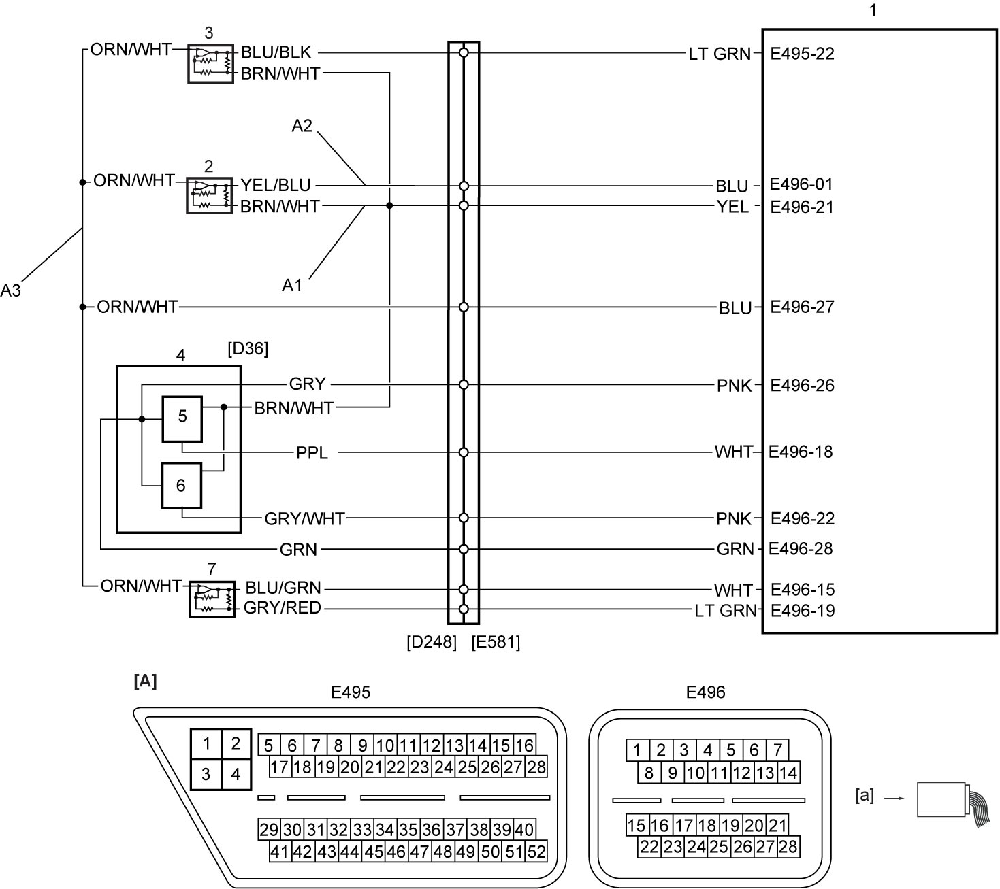

5F
| DTC P0932-12 / P0932-14 |
DTC Detecting Condition and Trouble Area
| DTC detecting condition | Trouble area |
|---|---|
|
P0932-12: Hydraulic Pressure Sensor – Circuit Short to Battery Circuit is shorted to power supply. (1 D/C detection logic) |
•Line pressure sensor circuit
•Line pressure sensor (solenoid valve unit) •TCM |
|
P0932-14: Hydraulic Pressure Sensor – Circuit Short to Ground or Open Circuit is shorted to ground or open. (1 D/C detection logic) |
Circuit Diagram

 "Expand image")
| [A]: | TCM connector (View: [a]) | 1. | TCM | 5. | Even gear clutch speed sensor |
| A1: | Line pressure sensor power supply circuit | 2. | Line pressure sensor | 6. | Odd gear clutch speed sensor |
| A2: | Line pressure sensor signal circuit | 3. | Parking position sensor | ||
| A3: | Line pressure sensor ground circuit | 4. | Sensor module |
DTC Confirmation Procedure
If you do not select a suitable route and take proper precautions when performing a road test, an accident can occur.
•Select a level road with no traffic to minimize the risk of accident.
•Perform the test extremely carefully.
•Perform the road test with 2 persons, a driver and a tester.
•Perform the test extremely carefully.
•Perform the road test with 2 persons, a driver and a tester.
NOTE:
•Check that the following condition is satisfied in this procedure.
—11 V < Battery voltage < 15 V
•Check that the following DTCs are not detected in this “DTC Confirmation Procedure”.
—Odd gear clutch position sensor (P0641-13, P0805-11, P0805-15, P0805-36, P0805-37 and P0805-38)
—Odd gear clutch speed sensor (P0715-31, P0715-61, P0715-62 and P0715-64)
—Even gear clutch speed sensor (P0716-31, P0716-61, P0716-62 and P0716-64)
—Parking position sensor (P081C-11, P081C-15, P081C-36, P081C-37, P081C-38 and P19B7-68)
—Sensor supply voltage (P19A9-1C)
—Odd gear clutch speed sensor (P0715-31, P0715-61, P0715-62 and P0715-64)
—Even gear clutch speed sensor (P0716-31, P0716-61, P0716-62 and P0716-64)
—Parking position sensor (P081C-11, P081C-15, P081C-36, P081C-37, P081C-38 and P19B7-68)
—Sensor supply voltage (P19A9-1C)
1)Start engine and drive vehicle.
DTC Troubleshooting
| Step | Action | Yes | No |
|---|---|---|---|
| 1 |
Was “Twin Clutch System Check” performed?
|
Go to Step 2.
|
Go to Twin Clutch System Check.
|
| 2 |
Line pressure sensor power supply circuit check
1)With ignition “OFF”, disconnect line pressure sensor connector.
2)Check for proper terminal connection to line pressure sensor connector.
3)If connection is OK, set ignition “ON”.
4)Check that voltage between “A1” and ground is approx. 5 V.
Is check result OK?
|
Go to step 3.
|
Repair “A1” circuit.
If this DTC is detected again, replace TCM and recheck DTC.
|
| 3 |
Line pressure sensor signal circuit and ground circuit check
1)With ignition “OFF”, disconnect “E495” and “E496” connectors from TCM.
2)Check for proper terminal connection to “E495” and “E496” connectors.
3)If connections are OK, check the following points.
•Resistance of “A2” and “A3” circuits: less than 1 Ω
•Resistance between each of “A2” and “A3” circuits and ground: infinity •Resistance between “A2” circuit terminal and other terminal at line pressure sensor connector: infinity •Resistance between “A3” circuit terminal and other terminal at line pressure sensor connector: infinity •Voltage of “A2” and “A3” circuits: approx. 0 V (When ignition is “ON”) Is check result OK?
|
Replace line pressure sensor (solenoid valve unit).
If this DTC is detected again, replace TCM and recheck DTC.
|
Repair or replace defective wire harness.
|